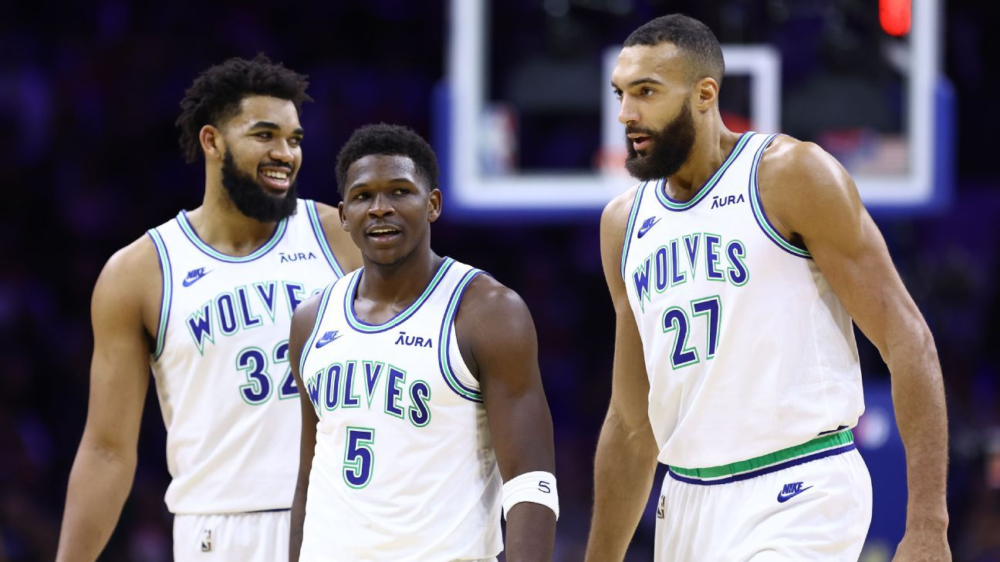

Basquete
O basquete é um dos esportes mais populares e emocionantes do mundo, jogado por milhões de pessoas em todos os continentes. Inventado por James Naismith em 1891, o basquete é um esporte de equipe que envolve habilidade, estratégia, velocidade e trabalho em equipe. O objetivo do jogo é marcar pontos ao arremessar uma bola através do aro do adversário, que está a uma altura de 3,05 metros. Uma partida de basquete é disputada entre duas equipes de cinco jogadores cada, em uma quadra retangular com um aro em cada extremidade. O jogo é rápido e dinâmico, exigindo dos jogadores não apenas habilidades técnicas, como dribles, passes e arremessos, mas também uma excelente condição física e inteligência tática. O basquete oferece diversos benefícios, incluindo o desenvolvimento da coordenação motora, agilidade, resistência cardiovascular e força muscular. Além disso, é um excelente esporte para ensinar valores como trabalho em equipe, disciplina, comunicação e fair play.